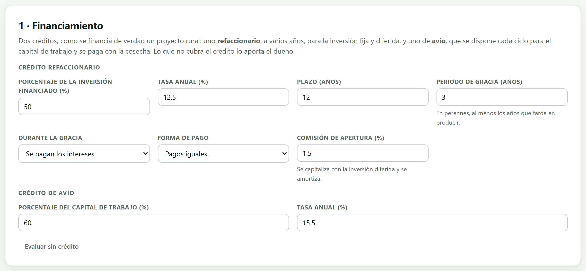
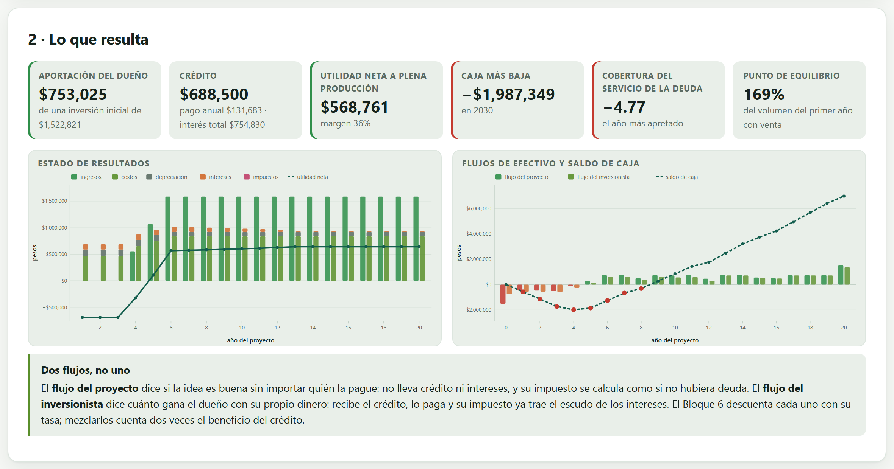
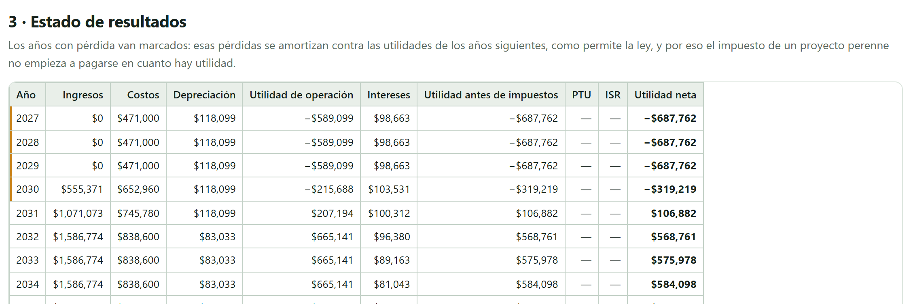
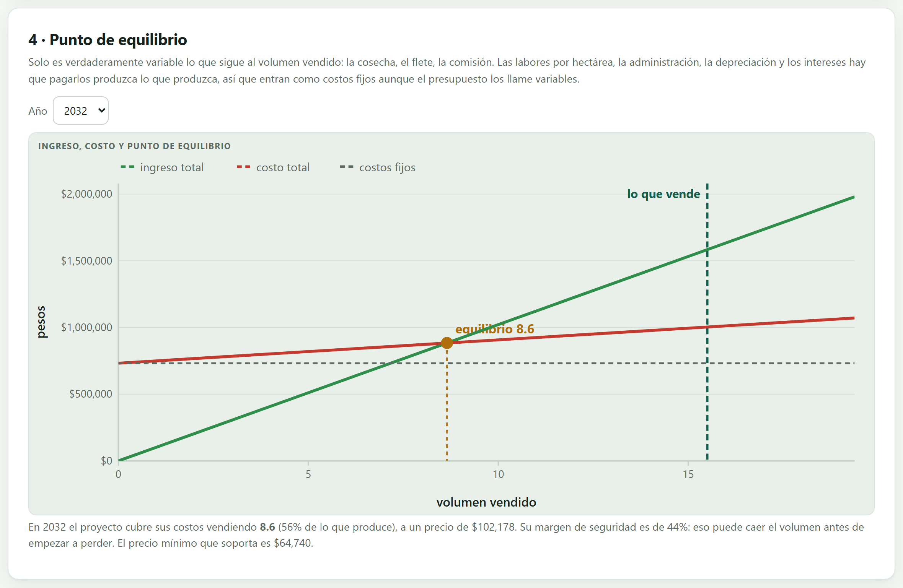
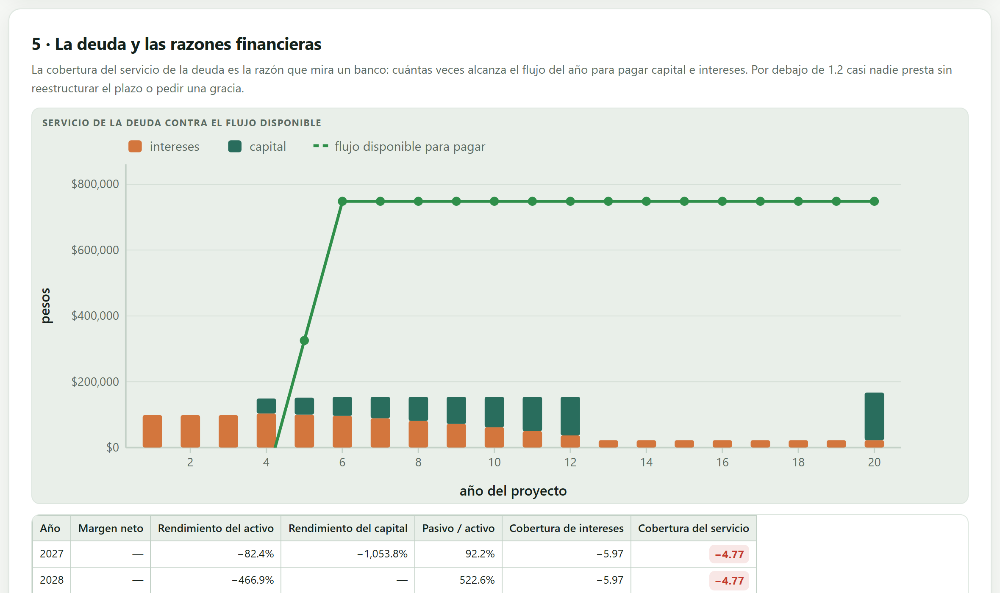

Aquí el proyecto deja de ser un presupuesto y se vuelve una empresa: pide crédito, lo paga, calcula su impuesto, arrastra sus pérdidas y levanta un balance que tiene que cuadrar. De este bloque salen los dos flujos de efectivo que el Bloque 6 va a descontar, y el saldo de caja que decide si el proyecto puede arrancar.
Los bloques 3 y 4 dijeron cuánto entra y cuánto sale. Este dice cuándo, de quién y qué queda. Es el bloque que convierte un presupuesto en estados financieros, y el único que puede decirte que un proyecto rentable no es viable porque se queda sin dinero antes de la primera cosecha.
| Lo que sale de aquí | Para qué sirve |
|---|---|
| Flujo del proyecto | El Bloque 6 lo descuenta al costo de todo el capital: dice si la idea es buena. |
| Flujo del inversionista | El Bloque 6 lo descuenta al costo del dinero del dueño: dice cuánto gana él. |
| Saldo de caja año por año | Dice si el proyecto arranca. Es el número que un banco mira primero. |
| Punto de equilibrio | Cuánto hay que vender para no perder; el Bloque 7 lo vuelve un valor límite. |
| Cobertura del servicio de la deuda | El indicador con el que una institución financiera decide si presta. |
La app modela el financiamiento como se financia de verdad un proyecto rural: un crédito refaccionario, a varios años, para la inversión fija y diferida, y uno de avío, que se dispone cada ciclo para el capital de trabajo y se paga con la cosecha. Lo que no cubra el crédito lo aporta el dueño.

| Campo | Qué hace |
|---|---|
| Porcentaje financiado | Qué parte de la inversión fija y diferida se pide prestada. En el cafetal, 50 % de $1,377,000 son $688,500. |
| Tasa anual | La misma que usó el CPPC del Bloque 2, si se armó así. Si aquí cambias la tasa, conviene volver al Bloque 2 y cambiarla también. |
| Plazo | Años del crédito. No tiene que coincidir con el horizonte; si lo pasa, la app avisa cuánto queda por pagar al final. |
| Periodo de gracia | Años sin amortizar capital. En perennes, al menos los años que tarda en producir. |
| Durante la gracia | Tres formas: se pagan los intereses, se capitalizan —se suman al saldo y se pagan después— o se condonan. |
| Forma de pago | Pagos iguales, capital constante o todo el capital al final. |
| Comisión de apertura | Se capitaliza con la inversión diferida y se amortiza. En el cafetal, 1.5 % de $688,500 son $10,328. |
| Año | Pago | Interés | Capital | Saldo |
|---|---|---|---|---|
| 1 a 3 (gracia) | $86,063 | $86,063 | $0 | $688,500 |
| 4 | $131,683 | $86,063 | $45,620 | $642,880 |
| 5 | $131,683 | $80,360 | $51,323 | $591,557 |
| 6 | $131,683 | $73,945 | $57,738 | $533,820 |
Durante la gracia el saldo no baja: se paga el interés ($688,500 × 12.5 %) y nada más. A partir del año 4 el pago es igual todos los años, pero por dentro cambia: cada vez menos interés y más capital. El crédito entero cuesta $754,830 de intereses, más de lo que se pidió prestado, y eso es lo normal en un plazo de doce años.
Un cafetal no produce hasta el año 4. Si el crédito empieza a amortizar en el año 1, el proyecto tiene que pagar capital con dinero que todavía no gana, y la caja se hunde. Por eso la app avisa cuando la gracia es menor que la gestación. Pero la gracia tampoco es gratis: con intereses capitalizados el saldo crece, y lo que no se pagó antes se paga después y con intereses sobre intereses.
Es de otra naturaleza: se dispone al empezar el ciclo y se liquida al vender, así que no tiene tabla de amortización sino un saldo que va y viene cada año. Se declara como porcentaje del capital de trabajo que calculó el Bloque 4 —60 % en el cafetal— y su tasa suele ser más alta que la del refaccionario, porque es dinero de corto plazo.
La segunda tarjeta resume de dónde sale cada peso de la inversión y qué compromisos deja.

En el cafetal, la caja acumulada toca fondo en −$1,987,349 en 2030, el año de la primera cosecha. Eso quiere decir que, además de la inversión inicial, alguien tiene que poner casi dos millones más a lo largo de los tres años de gestación —o conseguir más crédito— o el proyecto no llega a producir. Un VAN positivo no sirve de nada si el proyecto muere en el año 3.
La tercera tarjeta arma el estado de resultados año por año, con la estructura de siempre y dos particularidades del sector primario mexicano.

| Particularidad | Qué hace la app |
|---|---|
| Pérdidas que se arrastran | La pérdida de un año se guarda y se resta de las utilidades de los años siguientes antes de calcular el impuesto. En el cafetal son tres años de pérdidas de gestación que cubren varios años de utilidades después. |
| Exención del sector primario | Del ingreso anual se descuenta la parte exenta que declaraste en el Bloque 2 antes de calcular el impuesto. |
| Reparto de utilidades | Si el proyecto lo paga, se resta antes del impuesto, como manda la ley. |
La sociedad del cafetal tiene doce socios, así que su exención del artículo 74 llega al tope de 200 UMA: $8,259,220 de ingreso libre al año. El ingreso del proyecto a plena producción es $1,586,774 —menos de la quinta parte de esa exención—, de modo que toda su utilidad queda exenta y el impuesto es cero en los veinte años. La app lo dice con una nota en la tarjeta de revisión.
Ese solo dato cambia el proyecto: sin exención, con 30 % de impuesto sobre una utilidad de $568,761 al año, el proyecto pagaría unos $170,000 anuales. Por eso el régimen fiscal del Bloque 2 no es un trámite.
La app construye dos flujos a partir del mismo estado de resultados, y la diferencia entre ellos es la idea más importante de todo el manual.
| Flujo del proyecto | Flujo del inversionista | |
|---|---|---|
| Qué pregunta | ¿Es buena la idea? | ¿Cuánto gano yo con mi dinero? |
| El crédito | No aparece: ni entra ni se paga. | Entra cuando se recibe y sale cuando se paga. |
| Los intereses | No se restan. | Se restan. |
| El impuesto | Se calcula como si no hubiera deuda. | El real, ya con el escudo fiscal de los intereses. |
| La inversión | Completa. | Solo la parte que pone el dueño. |
| Con qué tasa se descuenta | El CPPC, o la TREMA si no hay deuda. | El costo del capital propio, que es más caro. |
Los intereses son deducibles, así que endeudarse baja el impuesto. Ese ahorro es un beneficio del financiamiento, no del proyecto. Si se metiera en el flujo del proyecto, la idea se vería mejor solo por estar endeudada, y además el CPPC ya descuenta ese mismo beneficio al multiplicar la deuda por (1 − t): se contaría dos veces. Por eso la app calcula el impuesto del flujo del proyecto sin deuda, y el del inversionista con ella.
| Año | Ingreso | Costo | Intereses | Utilidad neta | Flujo del proyecto | Flujo del inversionista |
|---|---|---|---|---|---|---|
| 2027 · gestación | $0 | $471,000 | $98,663 | −$687,762 | −$471,000 | −$569,663 |
| 2030 · primera cosecha | $555,371 | $652,960 | $103,531 | −$319,219 | −$124,291 | −$257,421 |
| 2032 · plena producción | $1,586,774 | $838,600 | $96,380 | $568,761 | $748,174 | $594,056 |
Los dos flujos son positivos a plena producción, pero el del inversionista es menor: la diferencia son los intereses y el capital que se le pagan al banco. En el último año, el flujo del proyecto salta a $1,544,749 porque recoge el valor de rescate.
La app levanta un balance general año por año —activo, pasivo y capital— y comprueba la identidad contable en cada uno. No es un adorno: es la prueba de que el modelo no perdió un peso por el camino.
En el cafetal, el mayor desajuste de los veintiún años es de menos de una millonésima de peso: el balance cuadra exactamente. Si alguna vez no cuadrara, la app lo reporta como error y dice en qué año y por cuánto, porque sería un defecto del programa, no de tus datos.
En la construcción de esta app, dos cosas lo rompieron y las dos eran del mismo tipo: el capital de trabajo se invierte el año anterior al que se necesita, y el saldo del crédito de avío hay que llevarlo como «recibido menos pagado» y no recalcularlo. Un desajuste de $56,920 en un año fue lo que delató el primer error. Por eso la comprobación se quedó en la app.
Cuánto hay que vender para no perder. La app lo calcula para cada año, porque en un proyecto con maduración el punto de equilibrio se mueve: los costos fijos son casi los mismos, pero la producción cambia.

| Costos fijos del año (fijos + por hectárea + depreciación + intereses) | $732,413 |
| Precio efectivo por tonelada | $102,178 |
| Costo variable por tonelada (pizca, beneficiado, flete) | $17,500 |
| Punto de equilibrio | 8.65 t · $883,778 |
| Se venden | 15.50 t |
| Margen de seguridad | el equilibrio es el 56 % de lo que se vende |
Para el punto de equilibrio, fijo es todo lo que no sigue al volumen vendido: los costos fijos del año, sí, pero también los jornales por hectárea, la depreciación y los intereses. Variable es solo lo que se paga por tonelada. Por eso el costo fijo de $732,413 de este cuadro es mucho mayor que los $185,000 de costos fijos del Bloque 4.
La última tarjeta de cálculo mira el proyecto con los ojos de quien presta: no le interesa el VAN, le interesa si el proyecto genera suficiente para pagarle.

| Razón | Qué dice | Cafetal 2032 |
|---|---|---|
| Cobertura del servicio de la deuda | Cuántas veces el flujo de operación cubre el pago del año. Debajo de 1.2 casi ninguna institución presta. | 4.85 |
| Cobertura de intereses | Cuántas veces la utilidad de operación cubre los intereses. | 6.9 |
| Margen neto | Qué parte del ingreso queda como utilidad. | 36 % |
| Servicio de la deuda | Capital más intereses del año. | $154,118 |
En los años de gestación la cobertura es negativa —no hay ingreso y sí hay pagos— y eso es normal en una perenne; lo que importa es que se recupere en cuanto entra la producción. En el cafetal pasa de 2.15 en 2031 a 4.85 en 2032.
| Clase | Lo que revisa |
|---|---|
| Error | Faltan los ingresos del Bloque 3 o el presupuesto del Bloque 4; el crédito es mayor que la inversión que financia; el balance no cuadra —y dice en qué año y por cuánto—. |
| Advertencia | La caja se queda en negativo y en qué año; la cobertura del servicio de la deuda queda por debajo de 1.2 en algún año; el proyecto no produce hasta cierto año pero el crédito ya amortiza —pide más gracia—; el proyecto pierde dinero todos los años del horizonte. |
| Nota | La tasa del crédito está por debajo de la inflación: es un crédito subsidiado y conviene decirlo; el crédito no termina de pagarse dentro del horizonte y cuánto queda; cuántos años usan pérdidas acumuladas; que la exención del sector primario cubre todo el ingreso de al menos un año. |
| Si la caja se queda negativa | entonces resuélvelo aquí: sube la gracia, alarga el plazo, pide más avío o reconoce que el dueño tiene que aportar más. No es un detalle que se arregle después. |
| Si la cobertura baja de 1.2 | entonces ningún banco prestaría en esas condiciones: cambia plazo o monto antes de presentar el estudio. |
| Si el balance no cuadra | entonces es un error del programa, no tuyo: repórtalo. |
| Si todo está en orden | entonces los dos flujos ya están listos para descontarse, cada uno con su tasa. |
Un consejo de presentación: en la tesis, el estado de resultados y el balance van completos en anexos, y en el cuerpo solo los tres o cuatro renglones que sostienen el argumento.